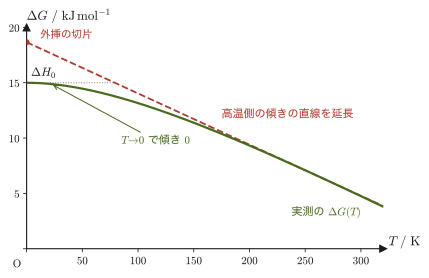
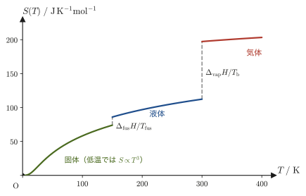
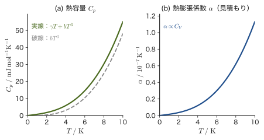
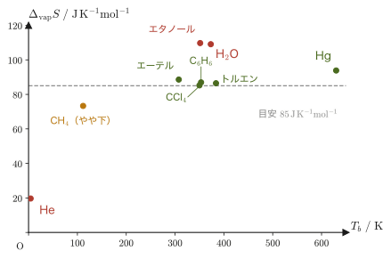
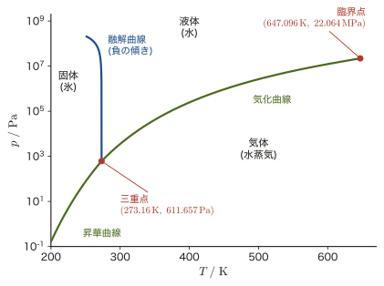
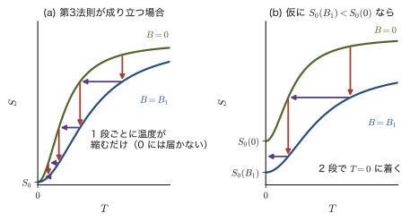

第32章熱力学第3法則と相転移の規則
冷蔵庫は庫内を冷やせる．エアコンも部屋を冷やせる．では，冷やす技術をどこまでも磨いていけば，理論上は絶対零度 $0\ \mathrm{K}=-273.15\ \mathrm{°C}$ に到達できるのだろうか（絶対零度は，熱運動が古典的には止まる温度である．量子力学では零点振動が残る．第23章で学んだ絶対温度の原点）．
19世紀末から20世紀初めにかけて，化学者・物理学者たちは実はこれと少し違う問いを追いかけていた——「化学反応が起こる向きを決めるギブスエネルギーの変化 $\Delta G$ は，温度を下げていくと究極的にどうなるのか」という問いである．この素朴な問いを実験的に突き詰めていく過程で，思いがけず「絶対零度そのものには決して到達できない」という，熱力学第1法則・第2法則と並ぶ熱力学第3法則が姿を現すことになる．
本章では，まず前章（第31章）で確立したギブスエネルギー $G=H-TS$ の全微分 $\dd G=-S\,\dd T+V\,\dd p$ を武器に，ネルンスト（Nernst）の定理が発見された歴史的な道筋を現代の記号で再現する．そこから得られる結論——「$T\to0$ で $\Delta S\to0$」——を出発点にして，絶対零度における熱容量 $C_p$ と熱膨張係数 $\alpha$ がともに0に近づくという，実験でも確かめられている帰結を導く．さらに，蒸発や融解のエントロピー変化にまつわる経験則（トルートンの規則・リチャーズの規則）を紹介したのち，発展的な内容として，圧力鍋の中や高山での水の沸点の違いを説明するクラウジウス＝クラペイロンの式を2つの相が共存する条件から導き，水の $p$-$T$ 相図を実際の数値で描きながら，氷がなぜ「押すと融ける」というほとんどの物質と逆の性質をもつのかを理解する．最後に，第3法則がどのようにして「絶対零度には到達できない」という主張を導くのかを見て，本章を締めくくる．
- Le Chatelier & Lewis の挑戦から Richards による低温での研究，Nernst による定式化，Planck の指摘を経て Sommerfeld が整理するまでの，熱力学第3法則が発見された歴史的な経緯
- 絶対エントロピー $S(T)=\displaystyle\int_0^T\frac{C_p}{T}\,\dd T+S_0$ の定義（相転移があるときはジャンプ $\Delta_{\mathrm{trs}}H/T_{\mathrm{trs}}$ を加える）と，第3法則（ゾンマーフェルトの表現）：$T\to0$ でエントロピーは圧力や凝集状態によらない一定値 $S_0$ に近づく
- 第3法則から導かれる，絶対零度における熱容量 $C_p\to0$ と熱膨張係数 $\alpha\to0$ の導出（後者は第31章のマクスウェルの関係式（IV）を使う）
- トルートンの規則（$\Delta_{\mathrm{vap}}S\approx85\ \mathrm{J\,K^{-1}mol^{-1}}$）とリチャーズの規則（金属などで $\Delta_{\mathrm{fus}}S\approx8\ \mathrm{J\,K^{-1}mol^{-1}}$），それぞれの規則の妥当性の違い
- 発展：2つの相のギブスエネルギーが等しいという条件から，相境界の勾配を与えるクラウジウス＝クラペイロンの式 $\dd p/\dd T=\Delta H/(T\Delta V)$ を導く
- 発展：水の $p$-$T$ 相図（三重点・臨界点・氷の融解曲線の負の傾き）と，第3法則が「絶対零度に到達できないこと」をどう説明するか
もとにしたノート：望月泰英『物理学ノート 熱力学』 pp. 59–61（p.62 は白紙）．
32.1 ネルンストの定理とその歴史
物質 A が反応して物質 B になる化学反応 $A\rightleftharpoons B$ を考える．ここでは A，B はどちらも凝縮相（固体・液体）の物質とする．反応にともなうギブスエネルギー・エンタルピー・エントロピーの変化を，反応後の量から反応前の量を引いたものとして $\Delta G=G_{\mathrm B}-G_{\mathrm A}$，$\Delta H=H_{\mathrm B}-H_{\mathrm A}$，$\Delta S=S_{\mathrm B}-S_{\mathrm A}$ と書き，ある温度 $T_1$ での反応にともなうエントロピー変化を $\Delta S_0$ とする．反応が自発的に進むかどうかは，第30章で学んだギブスエネルギー変化 $\Delta G$ の符号で決まる．一定温度 $T$ のもとでは，$\Delta G=\Delta H-T\Delta S$ が厳密に成り立つ．ここで自然にわいてくる問いがある——もし $T_1$ をどんどん $0\ \mathrm K$ に近づけていったら，$\Delta S_0$ はいったいどうなるのだろうか．19世紀の終わり，この問いに答えようとした研究には長い試行錯誤の歴史がある．
絶対零度そのものに実験で到達することは（後で見るように）非常に難しい．それでも19世紀後半，ル・シャトリエ（Le Chatelier）とルイス（G.N. Lewis）は，低温での反応の振る舞いを調べることでこの問題に迫ろうとした．しかし，当時の実験技術ではこの問いに完全な決着をつけることはできなかった．
イメージ：なぜ多くの研究者は「答えは明らかだ」と思ったのか
$\Delta G=\Delta H-T\Delta S$ という式だけを眺めると，「$T\to0$ のとき $T\Delta S\to0$ になるのだから，$\Delta S$ がよほど発散しない限り $\Delta G\to\Delta H$ になるのは当たり前ではないか」と思うかもしれない．実際，1900年ごろまでの多くの研究者はまさにそう考えた．ところが，これから見るように，低温での研究が明らかにしたのはこの「当たり前」よりずっと強い事実であり，そここそが歴史の分かれ目になる．
1902年，リチャーズ（T.W. Richards）は電池の起電力を調べ，温度を下げるにつれて $\Delta G$ と $\Delta H$ が近づいていくことを見いだした．電池の起電力 $E$ は，電池反応のギブスエネルギー変化と $\Delta G=-nFE$（$n$：反応で移動する電子の数，$F=96485\ \mathrm{C/mol}$：ファラデー定数）で結ばれている．したがって起電力を測れば $\Delta G$ が実験でわかる．こうして $T\to0\ \mathrm K$ で $\Delta G\to\Delta H$ となる傾向が確かめられた．ここまでは前段落の「素朴な予想」どおりである．しかし，リチャーズの研究に続く低温での測定は，もっと重要な事実を示していた．$\Delta G$ を温度 $T$ の関数としてグラフに描くと，$T\to0$ に近づくにつれてこの曲線の傾きが $0$ に近づいていく，つまり
$$ T\to0\ \mathrm{K}\ \text{のとき}\quad \left(\frac{\partial \Delta G}{\partial T}\right)_p\to0 $$という，単に「$\Delta G$ の値が $\Delta H$ に近づく」だけでは出てこない，もう一段強い事実である．前段落の素朴な議論は $\Delta S$ が有限でありさえすれば自動的に成り立ってしまうので，$\Delta G\to\Delta H$ という事実そのものからは $\Delta S$ について何も新しいことは言えない．実験が示したのは，$\Delta G$-$T$ グラフが $T=0$ で水平な接線をもつという，より強い事実だったのである．
導出：傾きが $0$ になる事実から $\Delta S\to0$ を導く
第31章で，ギブスエネルギー $G=H-TS$ の全微分が
$$ \dd G=-S\,\dd T+V\,\dd p $$となることを見た．圧力を一定にして（$\dd p=0$）$\dd T$ で割ると，各物質について $(\partial G/\partial T)_p=-S$ が成り立つ．物質 B についての式から物質 A についての式を引くと（$\Delta G=G_{\mathrm B}-G_{\mathrm A}$，$\Delta S=S_{\mathrm B}-S_{\mathrm A}$ なので），
$$ \left(\frac{\partial \Delta G}{\partial T}\right)_p=-\Delta S $$という関係が得られる．起電力の言葉で書けば，$\Delta G=-nFE$ から $\Delta S=nF\,(\partial E/\partial T)_p$ となり，反応エントロピーが起電力の温度変化から実測できることがわかる．したがって，$(\partial \Delta G/\partial T)_p\to0$（$T\to0$）という実験事実は，そのまま
$$ T\to0\ \mathrm{K}\ \text{のとき}\quad \Delta S\to0 $$を意味する．こうして $\Delta S\to0$ が実験的に裏づけられ，1906年，ネルンスト（W. Nernst）が低温での測定と熱力学の考察にもとづいて，この結果を一般の反応について次のように定式化した．
（導出終わり）
法則32.1 ネルンストの定理（原型）
凝縮相（固体・液体）どうしの反応について，温度が絶対零度に近づくとき，反応にともなうエントロピー変化は $0$ に近づく：
$$ T\to0\ \mathrm{K}\ \text{のとき}\quad \Delta S\to0\ [\mathrm{J\,K^{-1}}] $$注意：ネルンストの定理が主張することと，主張しないこと
1906年のネルンストの原論文が主張したのは，あくまで反応の前後でのエントロピーの差 $\Delta S$ が $0$ に近づくということ，つまり反応で結ばれる A と B が $T\to0$ で同じエントロピー $S_{0,\mathrm A}=S_{0,\mathrm B}$ に近づくということだけである．その共通の値そのもの（$0$ とおいてよいか）や，反応で結ばれない物質どうし・圧力や凝集状態が違う状態どうしのエントロピーの関係については，何も述べていない．そこで，個々の物質・状態のエントロピーの原点を決める仕事が必要になった．次節で見るように，プランクは「純粋な結晶なら $S_0=0$」と指摘し，ゾンマーフェルトは「$S_0$ は圧力や凝集の状態によらない一定値である」という形にまとめ直した．

例題32.1 $\Delta G$-$T$ 曲線の傾きが $0$ に近づく速さ
ある仮想的な反応（実在の物質ではない模式例）について，反応エントロピーの温度変化が
$$ \Delta S(T)=\Delta S_\infty\left(1-e^{-T/T_0}\right),\qquad \Delta S_\infty=50\ \mathrm{J\,K^{-1}mol^{-1}},\ \ T_0=100\ \mathrm{K} $$というモデルで表せるとする（$T\to0$ で $\Delta S\to0$ となり，$T\to\infty$ で一定値 $\Delta S_\infty$ に飽和する，第3法則を満たす簡単なモデルである）．このとき $(\partial \Delta G/\partial T)_p=-\Delta S(T)$ を $T=300,\ 100,\ 30,\ 5\ \mathrm{K}$ のそれぞれで求め，$T\to0$ に近づくにつれてどのように $0$ に近づくかを確認せよ．
解答 $(\partial \Delta G/\partial T)_p=-\Delta S(T)=-\Delta S_\infty(1-e^{-T/T_0})$ に数値を代入すると，
$$ T=300\ \mathrm{K}:\ -50\times(1-e^{-3.0})=-50\times0.9502\approx-47.5\ \mathrm{J\,K^{-1}mol^{-1}} $$ $$ T=100\ \mathrm{K}:\ -50\times(1-e^{-1.0})=-50\times0.6321\approx-31.6\ \mathrm{J\,K^{-1}mol^{-1}} $$ $$ T=30\ \mathrm{K}:\ -50\times(1-e^{-0.3})=-50\times0.2592\approx-13.0\ \mathrm{J\,K^{-1}mol^{-1}} $$ $$ T=5\ \mathrm{K}:\ -50\times(1-e^{-0.05})=-50\times0.0488\approx-2.44\ \mathrm{J\,K^{-1}mol^{-1}} $$確かに $T$ が小さくなるにつれて $(\partial \Delta G/\partial T)_p$ の絶対値は単調に小さくなり，$T\to0$ の極限では $0$ に収束する（$e^{-T/T_0}\to1$ なので $1-e^{-T/T_0}\to0$ となることによる）．これは「$\Delta G$-$T$ 曲線が $T=0$ で水平になる」という振る舞いを，具体的な関数の形で再現したものである．
32.2 絶対エントロピーと熱力学第3法則（ゾンマーフェルトの表現）
前節で確立したのは「反応の前後でのエントロピーの差 $\Delta S$ が $T\to0$ で $0$ に近づく」という主張だった．これまでエントロピーは差 $\Delta S$ の形でしか比較できなかったが，ここでは基準点 $T=0$ を決めて，物質1つ1つがもつエントロピー $S$ そのものに絶対的な値を与えることを考えよう．圧力一定のもとで，定圧熱容量 $C_p$（第27章で学んだ量．物質の温度を単位温度だけ上げるのに必要な熱量）が温度の関数として実験的にわかっているとする．エントロピーの定義（$\dd S=\dd'Q_{\text{可逆}}/T=C_p\,\dd T/T$，定圧過程）を積分すると，ある温度 $T$ でのエントロピーは
$$ S(T)=\int_0^T\frac{C_p}{T}\,\dd T+S_0 $$と表される．ここで $S_0$ は積分定数であり，物理的には「$T=0$ でのエントロピー」を意味する．もし第3法則的な考え方にならって $T\to0$ で $S(T)\to0$ となることを要求すれば $S_0\to0$ となり，この $S(T)$ を絶対エントロピー（absolute entropy）と呼ぶ．こうして，個々の物質について「$T=0$ を基準にした」エントロピーの絶対的な値を，実験室で測定できる $C_p(T)$ のデータだけから決められることになる．これは，エントロピーが差の形でしか意味をもたなかったこれまでの状況を思い出すと，かなり大胆な主張であることがわかるだろう．
考察：プランクの指摘——「純粋結晶」という条件
ネルンストの定理が発表されたのち，プランク（M. Planck）は「$S_0=0$ が成り立つのは，物質が完全に規則正しく並んだ純粋な結晶である場合に限られるはずだ」と指摘した．これは重要な限定である．たとえば原子の並び方が2種類以上入り混じったまま凍結された固溶体や，分子の向きがランダムなまま固まったガラス（非晶質固体）では，$T=0$ になっても原子・分子の配置の乱雑さがそのまま「凍結」されて残ってしまい，$S_0$ は $0$ にならず正の値（残余エントロピー，residual entropy）をもつことがある．たとえば一酸化炭素の固体（CO分子はほぼ対称なため，結晶中でCとOの向きがランダムに混じって固定されやすい）はその代表例として知られている．水の氷も残余エントロピーをもつ例で，水素原子の並び方の自由度から見積もると（パウリング（Pauling）の見積もり）$R\ln(3/2)\approx3.4\ \mathrm{J\,K^{-1}mol^{-1}}$ となり，熱量測定から決めた第3法則エントロピーと，分光学的・統計力学的に計算したエントロピーとの差（ジオークとストウトが1936年に水蒸気について得た $0.82\ \mathrm{cal\,K^{-1}mol^{-1}}\approx3.4\ \mathrm{J\,K^{-1}mol^{-1}}$）とよく合うことが知られている．
この指摘を受けて，ゾンマーフェルト（A. Sommerfeld）は，ネルンストの定理を次のように，物質の詳細（結晶か非晶質か，どんな圧力かなど）によらない一般的な形にまとめ直した．
法則32.2 熱力学第3法則（ゾンマーフェルトの表現）
系の温度が絶対零度 $0\ \mathrm{K}$ に近づくにつれて，そのエントロピーは一定値 $S_0$ に近づく．この $S_0$ は，圧力や体積，凝集の状態（結晶の構造や相の違いなど）にはよらない：
$$ \lim_{T\to0}S(T,p)=S_0\quad(p\ \text{によらない}) $$定義32.1 絶対エントロピー
純粋な結晶について $S_0=0$ とする慣例（プランクの提案）を採用すると，途中で相転移がないとき，温度 $T$ における絶対エントロピーは
\begin{equation} S(T)=\int_0^T\frac{C_p(T')}{T'}\,\dd T' \label{eq:32-abs-entropy} \end{equation}で与えられる．右辺の積分がきちんと収束するためには，$T'\to0$ で $C_p(T')\to0$ となっていなければならない（そうでなければ被積分関数 $C_p/T'$ が $T'=0$ で発散してしまう）．次節で見るように，これはまさに第3法則そのものから要求される性質である．
応用：統計力学から見た $S_0=0$ の意味（予告）
後に第49章（統計力学の部）で学ぶように，エントロピーは系がとりうる微視的な状態の数 $W$（熱力学的重率）を用いて $S=k_{\mathrm B}\ln W$（ボルツマンの原理）と表される．純粋結晶が絶対零度で唯一つの基底状態（$W=1$）に落ち着くなら，$S_0=k_{\mathrm B}\ln1=0$ となり，第3法則が量子力学的な描像から自然に導かれることになる．本章では熱力学の範囲にとどめ，この統計力学的な意味づけの詳細には立ち入らない．
32.2.1 相転移をはさむときの絶対エントロピー
式 \eqref{eq:32-abs-entropy} は，温度を $0$ から $T$ まで上げる途中で相転移が起こらない場合の式である．実際の熱測定では，途中で融解や蒸発が起こることが多い．相転移が起こる温度 $T_{\mathrm{trs}}$ では，熱 $\Delta_{\mathrm{trs}}H$ が可逆に吸収される（第30章）ので，エントロピーが $\Delta_{\mathrm{trs}}H/T_{\mathrm{trs}}$ だけジャンプする．固体から出発して融点 $T_{\mathrm{fus}}$ で液体に，沸点 $T_{\mathrm b}$ で気体になる物質の絶対エントロピーは，各相の定圧熱容量を $C_p^{\mathrm s},C_p^{\mathrm l},C_p^{\mathrm g}$ として，
\begin{equation} S(T)=\int_0^{T_{\mathrm{fus}}}\frac{C_p^{\mathrm s}}{T'}\,\dd T'+\frac{\Delta_{\mathrm{fus}}H}{T_{\mathrm{fus}}}+\int_{T_{\mathrm{fus}}}^{T_{\mathrm b}}\frac{C_p^{\mathrm l}}{T'}\,\dd T'+\frac{\Delta_{\mathrm{vap}}H}{T_{\mathrm b}}+\int_{T_{\mathrm b}}^{T}\frac{C_p^{\mathrm g}}{T'}\,\dd T' \label{eq:32-abs-entropy-trs} \end{equation}と書ける．図32.3は，ある仮想的な物質についてこの $S(T)$ を温度に対してプロットしたものである．低温の固体では $C_p\propto T^3$ なので $S(T)\propto T^3$ で立ち上がり，融点と沸点でそれぞれジャンプが現れる．実験室で測るのは $C_p(T)$ と転移エンタルピーだけで，それらから 標準モルエントロピー（1 bar，$298.15\ \mathrm K$ での絶対エントロピー）が決まる．

例題32.2 デバイ型の熱容量から絶対エントロピーを求める
低温での固体の熱容量は，しばしばデバイ模型により $C_p\approx bT^3$（$b$ は物質ごとに決まる定数）というよく知られた形で近似できる（第27章で学んだ比熱の温度変化，統計力学的な導出は第53章で扱う）．このとき，式 \eqref{eq:32-abs-entropy} を使って，温度 $T_1$ での絶対エントロピー $S(T_1)$ を $b,T_1$ で表せ．また，銅（デバイ温度 $\Theta_{\mathrm D}=343\ \mathrm K$，低温極限で $b=\dfrac{12\pi^4}{5}\dfrac{R}{\Theta_{\mathrm D}^3}$）について，$T_1=10\ \mathrm K$ での絶対エントロピーを求めよ．固体では低温で $C_p\approx C_V$ とみなしてよい．
解答 $C_p=bT^3$ を式 \eqref{eq:32-abs-entropy} に代入すると，
$$ S(T_1)=\int_0^{T_1}\frac{bT'^3}{T'}\,\dd T'=\int_0^{T_1}bT'^2\,\dd T'=\left[\frac{bT'^3}{3}\right]_0^{T_1}=\frac{bT_1^3}{3} $$（被積分関数が $bT'^2$ という $T'=0$ で有限な関数になるので，積分はきちんと収束することにも注意しよう）．銅について $b$ を計算すると，$R=8.314\ \mathrm{J\,mol^{-1}K^{-1}}$，$\Theta_{\mathrm D}=343\ \mathrm K$ より，
$$ b=\frac{12\pi^4}{5}\times\frac{8.314}{343^3}\approx4.817\times10^{-5}\ \mathrm{J\,mol^{-1}K^{-4}} $$したがって，
$$ S_{10\,\mathrm K}=\frac{b\times10^3}{3}=\frac{4.817\times10^{-5}\times1000}{3}\approx0.0161\ \mathrm{J\,mol^{-1}K^{-1}} $$となる．絶対零度からわずか $10\ \mathrm K$ 上がっただけでは，エントロピーの増加はごくわずかであることがわかる．なお，銅のような金属では，伝導電子の寄与 $\gamma T$（$\gamma\approx0.695\ \mathrm{mJ\,mol^{-1}K^{-2}}$）も熱容量に加わる．ここでは格子の寄与 $bT^3$ だけを考えたが，電子の寄与を入れると $10\ \mathrm K$ ではエントロピーに $\gamma T\approx0.0070\ \mathrm{J\,mol^{-1}K^{-1}}$ が加わり，$S_{10\,\mathrm K}\approx0.0230\ \mathrm{J\,mol^{-1}K^{-1}}$ となる．
例題32.3 水1 molの $298.15\ \mathrm K$ での絶対エントロピー
氷の $273.15\ \mathrm K$ でのモルエントロピーを，$0\ \mathrm K$ からの熱測定 $\int_0^{273.15\,\mathrm K}(C_p/T)\,\dd T$（融解前まで）で求めると $37.9\ \mathrm{J\,K^{-1}mol^{-1}}$ になる．融解エンタルピーを $\Delta_{\mathrm{fus}}H=6.01\ \mathrm{kJ\,mol^{-1}}$，液体の水の定圧モル熱容量を $273.15\sim298.15\ \mathrm K$ で一定値 $75.3\ \mathrm{J\,K^{-1}mol^{-1}}$ として，熱量測定だけから決まる液体の水 $1\ \mathrm{mol}$ の $298.15\ \mathrm K$ での第3法則エントロピーを，式 \eqref{eq:32-abs-entropy-trs} の考え方で求めよ．さらに，氷の残余エントロピー（パウリングの見積もり $R\ln(3/2)$，32.2節の考察）を加えて，表に載っている標準モルエントロピー $69.95\ \mathrm{J\,K^{-1}mol^{-1}}$ と比べよ．
解答 $273.15\ \mathrm K$ の氷までの分が $37.9\ \mathrm{J\,K^{-1}mol^{-1}}$ である．融解でのジャンプは，
$$ \frac{\Delta_{\mathrm{fus}}H}{T_{\mathrm{fus}}}=\frac{6010\ \mathrm{J\,mol^{-1}}}{273.15\ \mathrm K}\approx22.0\ \mathrm{J\,K^{-1}mol^{-1}} $$液体の水を $273.15\ \mathrm K$ から $298.15\ \mathrm K$ まで温める分は，$C_p$ が一定なので
$$ \int_{273.15}^{298.15}\frac{75.3}{T'}\,\dd T'=75.3\ln\frac{298.15}{273.15}=75.3\times0.0876\approx6.6\ \mathrm{J\,K^{-1}mol^{-1}} $$これらを足すと，熱量測定だけから決まる第3法則エントロピーは，
$$ S_{298.15\,\mathrm K}^{\text{熱量}}\approx37.9+22.0+6.6=66.5\ \mathrm{J\,K^{-1}mol^{-1}} $$である．この計算は，氷が $0\ \mathrm K$ で完全な結晶になっている（$S_0=0$）と仮定している．しかし実際の氷では，水素原子の並び方の乱れが $0\ \mathrm K$ まで凍結されていて，残余エントロピー $R\ln(3/2)=8.314\times0.4055\approx3.4\ \mathrm{J\,K^{-1}mol^{-1}}$ が残っている．これは熱量測定の積分には現れないので，真の絶対エントロピーはこれを加えて，
$$ S_{298.15\,\mathrm K}\approx66.5+3.4=69.9\ \mathrm{J\,K^{-1}mol^{-1}} $$となる．これは，表に載っている水の標準モルエントロピー $69.95\ \mathrm{J\,K^{-1}mol^{-1}}$ とよく一致する（この表の値は，水蒸気の分光学的・統計力学的なエントロピーと蒸発熱から決められており，残余エントロピーを含んでいる）．このように，熱容量の測定だけから絶対エントロピーがほぼ決まることが，第3法則のもっとも実用的な成果である．熱量測定の値と統計力学的な値の差が氷の残余エントロピーとして現れることは，ジオーク（W. F. Giauque）とストウト（J. W. Stout）が1936年に水蒸気の場合に確かめた．なお，氷そのものの $273.15\ \mathrm K$ での真のエントロピーは $37.9+3.4=41.3\ \mathrm{J\,K^{-1}mol^{-1}}$ である．
32.3 絶対零度における熱容量と熱膨張係数
第3法則は，一見すると「絶対零度でのエントロピーの値」についての抽象的な主張にすぎないように見えるかもしれない．しかし実は，この法則から，実験室で直接測定できる2つの物理量——熱容量 $C_p$ と熱膨張係数 $\alpha$——について，きわめて具体的で検証可能な予言が導かれる．順に見ていこう．
32.3.1 絶対零度における熱容量
32.1節と同じく，ある反応（または相転移）にともなうギブスエネルギー変化 $\Delta G(T)$ を考える．$\Delta G=\Delta H-T\Delta S$ の両辺を全微分すると，
$$ \dd(\Delta G)=\dd(\Delta H)-T\,\dd(\Delta S)-\Delta S\,\dd T $$となる．ここで $\Delta H,\Delta S,\Delta G$ をすべて $T,p$ の関数とみて，圧力を一定に保ったまま $\dd T$ で割ると，
\begin{equation} \left(\frac{\partial \Delta G}{\partial T}\right)_p=\left(\frac{\partial \Delta H}{\partial T}\right)_p-T\left(\frac{\partial \Delta S}{\partial T}\right)_p-\Delta S \label{eq:32-dG-expand} \end{equation}が得られる．一方，定圧では $Q_p=\Delta H=\displaystyle\int C_p\,\dd T$ なので，これを微分すると $\partial(\Delta H)/\partial T=\Delta C_p$（反応前後の定圧熱容量の差，第27章の $(\partial H/\partial T)_p=C_p$ を反応前後の差にあてはめたもの）である．さらに前節の結果 $(\partial \Delta G/\partial T)_p=-\Delta S$ を式 \eqref{eq:32-dG-expand} の左辺に代入すると，左辺の $-\Delta S$ と右辺の第3項 $-\Delta S$ が打ち消し合って，
\begin{equation} \Delta C_p=T\left(\frac{\partial \Delta S}{\partial T}\right)_p \label{eq:32-dCp-TdS} \end{equation}が残る．ここで，第3法則により $T\to0$ で $\Delta S\to0$ であり，さらに $(\partial \Delta S/\partial T)_p$ が $T\to0$ でも有限にとどまる（発散しない）とすれば，式 \eqref{eq:32-dCp-TdS} の右辺は因子 $T$ のために $T\to0$ で $0$ に近づく．すなわち，$(\partial \Delta H/\partial T)_p\to0$，つまり
\begin{equation} T=0\ \mathrm{K}\ \text{のとき}\quad \Delta C_p=0 \label{eq:32-dCp-zero} \end{equation}が導かれる．なお，式 \eqref{eq:32-dCp-TdS} は式 \eqref{eq:32-dG-expand} を書き換えただけの恒等式であり，新しい情報を含んでいるのは「$(\partial \Delta S/\partial T)_p$ が発散しない」という仮定のほうである．そこで，この仮定を使わずに同じ結論を導く議論を次の box why で確認しておく．
考察：$C_p\to0$ を仮定なしで導く——絶対エントロピーの積分が有限であるために
$(\partial S/\partial T)_p=C_p/T$（エントロピーの定義そのものから）なので，式 \eqref{eq:32-dCp-TdS} の右辺 $T(\partial \Delta S/\partial T)_p$ は $\Delta C_p$ に等しく，$T\to0$ だからといって自動的に $0$ になるわけではない．そこで，第3法則（エントロピーが有限値に近づくこと）から直接 $C_p\to0$ を導いてみよう．
32.2節の絶対エントロピーの式 $S(T)=\displaystyle\int_0^T(C_p/T')\,\dd T'+S_0$ を思い出す．この積分が（物理的に意味のある，有限な）値をもつためには，被積分関数 $C_p(T')/T'$ が $T'\to0$ で発散しないことが必要である．もし $C_p$ が $T'\to0$ で $0$ でない有限の値 $c$ に近づいたとすると，$C_p/T'\approx c/T'$ となり，$\displaystyle\int_0 \dfrac{c}{T'}\,\dd T'=c\ln T'\Big|_0$ は $T'\to0$ で対数的に発散してしまい，絶対エントロピー自体が有限の値をもてなくなってしまう．したがって，絶対エントロピーが（第3法則の要求どおり）$T\to0$ で有限な値 $S_0$ に近づくためには，$C_p(T')$ 自身が $T'\to0$ で $0$ に近づいていなければならない．反応の前後の差 $\Delta S(T)=\Delta S(0)+\displaystyle\int_0^T(\Delta C_p/T')\,\dd T'$ についても同じで，$\Delta S(0)=0$ で $\Delta S$ が有限であるためには $\Delta C_p\to0$ が必要である．この議論は $C_p$ の振る舞いについて余計な仮定をおかず，第3法則だけから直接 $C_p\to0$ を導く，より見通しのよい方法になっている．
こうして，反応の前後の熱容量の差 $\Delta C_p$ についても，個々の物質の熱容量 $C_p$ そのものについても，$T\to0$ で $0$ に近づくことがわかった．これは実験的にも広く確かめられている．熱容量が小さいということは，同じ熱量 $Q$ を加えたときの温度上昇 $\Delta T\approx Q/C_p$ が大きいということである．つまり物質を絶対零度に近づけていくと，「もうこれ以上冷えにくくなる」のではなく，むしろわずかな熱の侵入でも温度が大きく上がってしまうので，低温を保つこと自体が難しくなる．これが，章の冒頭で述べた「絶対零度まで下げることは非常に困難」であることの理由の一部である（演習32.8）．
32.3.2 絶対零度における熱膨張係数
第3法則（法則32.2）は，絶対零度でのエントロピー $S_0$ が圧力 $p$ にも体積 $V$ にもよらない一定値であると主張する．したがって，十分低温では異なる圧力でのエントロピーの差 $S(T,p_1)-S(T,p_2)$ が $T\to0$ で $0$ に近づく．これは，$T=0$ に極めて近いところでは，圧力を少し変えても（$p\to p+\dd p$），エントロピーがほとんど変化しないということを意味する：
$$ T\to0\ \mathrm{K}\ \text{のとき}\quad \left(\frac{\partial S}{\partial p}\right)_T\to0 $$（同様に $(\partial S/\partial V)_T\to0$ も成り立つ．どちらも「$S_0$ が $p$ や $V$ によらない」という第3法則の直接の帰結である．一方，$(\partial S/\partial T)_p=C_p/T$ が $T\to0$ で $0$ になるかどうかは，$C_p$ が $0$ に近づくだけでは決まらない．絶縁体の低温の格子比熱 $C_p=bT^3$ では $C_p/T=bT^2\to0$ となるが，金属では電子の寄与 $C_p=\gamma T+bT^3$ のために $C_p/T\to\gamma$（有限）となる．演習32.5を参照．）ここで第31章で導いたマクスウェルの関係式（IV）
$$ \left(\frac{\partial V}{\partial T}\right)_p=-\left(\frac{\partial S}{\partial p}\right)_T $$を思い出そう．熱膨張係数の定義 $\alpha\overset{\mathrm{def}}{=}\dfrac1V\left(\dfrac{\partial V}{\partial T}\right)_p$（第27章）とあわせると，
\begin{equation} \left(\frac{\partial S}{\partial p}\right)_T=-\left(\frac{\partial V}{\partial T}\right)_p=-\alpha V \end{equation}という関係が得られる．$T\to0$ の極限でこの式の左辺が $0$ に近づくのだから，右辺の $-\alpha V$ も $0$ に近づかなければならない．物質量が有限であるかぎり $T=0\ \mathrm K$ でも体積 $V$ が $0$ になることはありえない（原子や分子がぎゅうぎゅう詰めになっても有限の体積を占める）ので，$V\neq0$ である．したがって，
\begin{equation} T=0\ \mathrm{K}\ \text{のとき}\quad \alpha=0 \label{eq:32-alpha-zero} \end{equation}という結論になる．物質を絶対零度に近づけていくと，熱膨張係数そのものも $0$ に近づく——温度を少し上げても体積がほとんど変わらなくなる（熱膨張しなくなる）ということである．なお，$\alpha$ は温度に対する体積変化の割合であり，圧力に対する体積変化の割合である等温圧縮率 $\kappa_T=-\dfrac1V\left(\dfrac{\partial V}{\partial p}\right)_T$ とは別の量である．$\alpha\to0$ は「物質が硬くなる」ことを意味しない．

例題32.4 低温でのエンタルピーの多項式モデルから $\Delta C_p(0)=0$ を確認する
ある反応のエンタルピー変化が，低温で $\Delta H(T)=c_0+c_1T+c_2T^2+\cdots$（テイラー展開，$c_0,c_1,c_2$ は定数）と近似できるとする．第3法則の帰結である式 \eqref{eq:32-dCp-zero}（$T=0$ で $\Delta C_p=0$）を満たすためには，係数 $c_1$ がどうならなければいけないか答えよ．
解答 $\Delta C_p(T)=\dfrac{\partial(\Delta H)}{\partial T}=c_1+2c_2T$ である．これを $T=0$ で評価すると $\Delta C_p(0)=c_1$ となる．式 \eqref{eq:32-dCp-zero} より $\Delta C_p(0)=0$ でなければならないので，
$$ c_1=0 $$という条件が要求される．つまり，低温でのエンタルピー変化を温度のべき級数で近似するとき，$T$ の1次の項（線形の項）の係数は必ず $0$ でなければならず，$\Delta H(T)=c_0+c_2T^2+\cdots$ という，$T^2$ から始まる形にしかなりえない．これは「実験データを低温側で単純な直線でフィットしてはいけない」という，実務上も重要な教訓を与えている．
例題32.5 金属の低温熱容量：$C_p\to0$ でも $C_p/T\to0$ とは限らない
銅の低温の定圧モル熱容量を $C_p=\gamma T+bT^3$（$\gamma=0.695\ \mathrm{mJ\,mol^{-1}K^{-2}}$，$b=4.817\times10^{-5}\ \mathrm{J\,mol^{-1}K^{-4}}$）と表す．(1) $T=10,\ 1,\ 0.1\ \mathrm K$ での $C_p$ と $(\partial S/\partial T)_p=C_p/T$ を求め，$T\to0$ でどうなるかを述べよ．(2) 絶縁体で $C_p=bT^3$ だけの場合の $C_p/T$ と比べよ．
解答 (1) $\gamma=6.95\times10^{-4}\ \mathrm{J\,mol^{-1}K^{-2}}$ として $C_p=\gamma T+bT^3$ を計算すると，
$$ T=10\ \mathrm K:\ C_p=6.95\times10^{-3}+4.817\times10^{-2}\approx5.51\times10^{-2}\ \mathrm{J\,mol^{-1}K^{-1}},\quad C_p/T\approx5.51\times10^{-3}\ \mathrm{J\,mol^{-1}K^{-2}} $$ $$ T=1\ \mathrm K:\ C_p=6.95\times10^{-4}+4.8\times10^{-5}\approx7.43\times10^{-4}\ \mathrm{J\,mol^{-1}K^{-1}},\quad C_p/T\approx7.43\times10^{-4}\ \mathrm{J\,mol^{-1}K^{-2}} $$ $$ T=0.1\ \mathrm K:\ C_p=6.95\times10^{-5}+4.8\times10^{-8}\approx6.95\times10^{-5}\ \mathrm{J\,mol^{-1}K^{-1}},\quad C_p/T\approx6.95\times10^{-4}\ \mathrm{J\,mol^{-1}K^{-2}} $$$C_p$ は $T\to0$ で $0$ に近づくが，$C_p/T=\gamma+bT^2$ は $\gamma=6.95\times10^{-4}\ \mathrm{J\,mol^{-1}K^{-2}}$ に近づいて $0$ にはならない．(2) 絶縁体では $C_p/T=bT^2$ で，$10\ \mathrm K$ で $4.8\times10^{-3}$，$1\ \mathrm K$ で $4.8\times10^{-5}$，$0.1\ \mathrm K$ で $4.8\times10^{-7}\ \mathrm{J\,mol^{-1}K^{-2}}$ と，$T^2$ に比例してどこまでも小さくなる．第3法則が要求するのは $C_p\to0$（したがって $\int_0 C_p\,\dd T/T$ が収束すること）だけで，傾き $(\partial S/\partial T)_p=C_p/T$ が $0$ になることまでは要求しない．
32.4 トルートンの規則とリチャーズの規則
ここまでは絶対零度という極限での振る舞いを見てきたが，本節では少し話題を変えて，相転移（気化・融解）にともなうエントロピー変化についての2つの経験則を見ておこう．これらは第3法則そのものではないが，「熱力学的性質と物理的性質の関係」という同じテーマに属する内容である．
ある液体がその沸点 $T_b$ で気化するとき，蒸発にともなうエントロピー変化を $\Delta_{\mathrm{vap}}S=\Delta_{\mathrm{vap}}H/T_b$（第30章で学んだ，可逆な相転移では $\Delta S=\Delta H/T_{\text{転移}}$ となる関係．次節でも改めて使う）と定義する．19世紀，トルートン（F.T. Trouton）は，さまざまな液体についてこの $\Delta_{\mathrm{vap}}S$ を比べてみると，液体の種類によらずほぼ同じ値になることに気づいた．
法則32.3 トルートンの規則
多くの液体について，沸点における蒸発エントロピーはおおよそ一定の値をとる：
$$ \Delta_{\mathrm{vap}}S=\frac{\Delta_{\mathrm{vap}}H}{T_b}\approx85\ \mathrm{J\,K^{-1}mol^{-1}} $$この値は気体定数 $R=8.314\ \mathrm{J\,K^{-1}mol^{-1}}$ のおよそ10倍，$\Delta_{\mathrm{vap}}S\approx85\approx10R$ である．同じように，冶金学者のリチャーズ（Joseph W. Richards）は1897年に，固体が融解するときの融解エントロピー $\Delta_{\mathrm{fus}}S=\Delta_{\mathrm{fus}}H/T_{\mathrm{fus}}$（$T_{\mathrm{fus}}$ は融点）についても，同様の経験則を提案した（この人は，32.1節で電池の起電力を調べたT. W. Richardsとは別人である）．
法則32.4 リチャーズの規則（金属の融解エントロピー）
多くの固体，とくに金属の多くについて，融点における融解エントロピーはおおよそ一定の値をとる：
$$ \Delta_{\mathrm{fus}}S=\frac{\Delta_{\mathrm{fus}}H}{T_{\mathrm{fus}}}\approx8\ \mathrm{J\,K^{-1}mol^{-1}} $$この値は $R$ にほぼ等しい（$\Delta_{\mathrm{fus}}S\approx R$）．たとえばナトリウムで $7.0$，鉄で $7.6$，銅で $9.8$，アルミニウムで $11.5\ \mathrm{J\,K^{-1}mol^{-1}}$ と，単純な金属では比較的よく成り立つ．一方，分子性の結晶では大きくはずれ，たとえば氷では $22.0$，ベンゼンでは約 $35\ \mathrm{J\,K^{-1}mol^{-1}}$ である．
イメージ：なぜ蒸発エントロピーはほぼ一定になるのか
液体が気体になるとき，分子はそれまで互いにすぐ近くに拘束されていた状態から，容器いっぱいに自由に飛び回れる状態へと解放される．この「分子が自由に動ける空間が劇的に広がる」ことによる並進運動のエントロピー増加は，分子の種類によらずおおむね似た大きさになる．実際，1気圧の沸点で気体1モルが占める体積は液体1モルの体積のおよそ $10^2\sim10^3$ 倍とどの液体でもオーダーが似ており，たとえば体積が300倍になるだけでも $R\ln300\approx47\ \mathrm{J\,K^{-1}mol^{-1}}$ のエントロピー増加になる．これに，液体中で分子が受けていた拘束が解放される寄与などが加わって約 $85\ \mathrm{J\,K^{-1}mol^{-1}}$ になる．厳密な統計力学的な意味づけは第49章で学ぶ．これに対して，固体が液体になる融解では，分子どうしの並び方の規則性がわずかに崩れるだけで，分子間の平均距離や運動の自由度はそれほど劇的には変わらない．そのため融解にともなうエントロピー変化は，物質ごとの結晶構造の違いを強く反映してしまい，蒸発の場合ほど普遍的な値にはならない．たとえば分子性の結晶では，融解で分子の向きの乱雑さが新たに増えるため，$\Delta_{\mathrm{fus}}S$ は $R$ よりずっと大きくなる．こうした事情から，トルートンの規則の方がリチャーズの規則よりもよく成り立つ．
これらの経験則は，まだ十分に調べられていない物質の性質を，かなりよい近似で見積もるのに使うことができる．そのため，新しく提案された結晶の原子模型や理論的なモデルの妥当性を検討する際の，簡便な目安としても用いられてきた．

例題32.6 トルートンの規則でベンゼンの蒸発エンタルピーを見積もる
ベンゼン（$\mathrm{C_6H_6}$）の沸点は $T_b=353.25\ \mathrm{K}$（$80.1\ \mathrm{°C}$）である．トルートンの規則を使って蒸発エンタルピー $\Delta_{\mathrm{vap}}H$ を見積もり，文献値 $30.72\ \mathrm{kJ\,mol^{-1}}$ と比較せよ．
解答 トルートンの規則 $\Delta_{\mathrm{vap}}S\approx85\ \mathrm{J\,K^{-1}mol^{-1}}$ より，
$$ \Delta_{\mathrm{vap}}H\approx\Delta_{\mathrm{vap}}S\times T_b\approx85\ \mathrm{J\,K^{-1}mol^{-1}}\times353.25\ \mathrm{K}\approx3.003\times10^4\ \mathrm{J\,mol^{-1}}=30.0\ \mathrm{kJ\,mol^{-1}} $$文献値 $30.72\ \mathrm{kJ\,mol^{-1}}$ と比べると誤差はおよそ $-2.3\ \%$ であり，非常によく一致する．ベンゼンは分子どうしが水素結合のような強い相互作用をつくらない，比較的単純な無極性分子なので，トルートンの規則がよく成り立つ典型例である．
例題32.7 水のトルートンの規則からのずれ
水の沸点は $T_b=373.15\ \mathrm{K}$（$100\ \mathrm{°C}$），蒸発エンタルピーは $\Delta_{\mathrm{vap}}H=40.7\ \mathrm{kJ\,mol^{-1}}$ である．水の蒸発エントロピー $\Delta_{\mathrm{vap}}S$ を求め，トルートンの規則の目安 $85\ \mathrm{J\,K^{-1}mol^{-1}}$ からどれだけずれているかを求めよ．また，そのずれが生じる理由を定性的に説明せよ．
解答 定義どおりに計算すると，
$$ \Delta_{\mathrm{vap}}S=\frac{\Delta_{\mathrm{vap}}H}{T_b}=\frac{40700\ \mathrm{J\,mol^{-1}}}{373.15\ \mathrm{K}}\approx109.1\ \mathrm{J\,K^{-1}mol^{-1}} $$トルートンの目安 $85\ \mathrm{J\,K^{-1}mol^{-1}}$ と比べると，
$$ \frac{109.1-85}{85}\times100\%\approx+28.3\% $$と，およそ3割近くも大きい．これは，液体の水の中で水分子どうしが水素結合によって強く結びつき，氷ほどではないにせよかなり規則性の高いネットワーク構造を保っていることに由来する．つまり，液体状態の水はトルートンの規則が想定する「単純にバラバラに動き回っている液体分子」よりもずっとエントロピーが低い状態にある．そのため，気体になって水素結合が完全にほどけるときのエントロピーの増加量 $\Delta_{\mathrm{vap}}S$ は，水素結合をもたない液体（ベンゼンなど）よりも大きくなる．同様の理由で，エタノールのように分子間で水素結合をつくる液体も，トルートンの規則から上方にずれることが知られている．
32.5 発展：クラウジウス＝クラペイロンの式
ここからの2節は発展的な内容である．圧力鍋の中（約2気圧）では水は約 $120\ \mathrm{°C}$ まで沸騰しないが，高い山の上では $100\ \mathrm{°C}$ よりずっと低い温度（富士山頂で約 $87\ \mathrm{°C}$，例題32.8）で沸騰する．このように，2つの相が共存できる温度（たとえば，ある圧力のもとで水と水蒸気がちょうど共存できる温度＝沸点）は，圧力によって変わる．この関係を式で表したものがクラウジウス＝クラペイロンの式（Clausius–Clapeyron equation）で，次節で見る水の $p$-$T$ 相図を理解するための鍵になる．以下では $S,V,G$ は物質1 molあたりの量（モル量）とし，相 A から相 B への転移にともなう変化を $\Delta S=S_{\mathrm B}-S_{\mathrm A}$，$\Delta V=V_{\mathrm B}-V_{\mathrm A}$，$\Delta H=H_{\mathrm B}-H_{\mathrm A}$（転移後の量から転移前の量を引いたもの）と書く．
物質の相 A（たとえば液体）と相 B（たとえば気体）が，温度 $T$，圧力 $p$ のもとで平衡に共存しているとする．平衡条件は，1モルあたりのギブスエネルギー（モルギブスエネルギー）が両方の相で等しいこと，
$$ G_{\mathrm A}(T,p)=G_{\mathrm B}(T,p) $$である．いま，共存できる $(T,p)$ の組を平面上にプロットした曲線（相境界線）に沿って，温度を $\dd T$ ，圧力を $\dd p$ だけ変化させても，2つの相はやはり共存し続けるとする．このとき，両辺のギブスエネルギーはそれぞれ同じだけ変化しなければならない：
$$ \dd G_{\mathrm A}=\dd G_{\mathrm B} $$導出：クラウジウス＝クラペイロンの式
ギブスエネルギーの全微分 $\dd G=-S\,\dd T+V\,\dd p$（第31章，ここではモル量 $S,V$ を使う）を両辺に代入すると，
$$ -S_{\mathrm A}\,\dd T+V_{\mathrm A}\,\dd p=-S_{\mathrm B}\,\dd T+V_{\mathrm B}\,\dd p $$となる．$\dd T,\dd p$ について整理すると，
$$ (V_{\mathrm B}-V_{\mathrm A})\,\dd p=(S_{\mathrm B}-S_{\mathrm A})\,\dd T $$すなわち，相境界線に沿った圧力の温度変化率は
$$ \frac{\dd p}{\dd T}=\frac{S_{\mathrm B}-S_{\mathrm A}}{V_{\mathrm B}-V_{\mathrm A}}=\frac{\Delta S}{\Delta V} $$である（$\Delta S=S_{\mathrm B}-S_{\mathrm A}$，$\Delta V=V_{\mathrm B}-V_{\mathrm A}$ は，相 A から相 B への転移にともなうモルエントロピー変化・モル体積変化）．さらに，この相転移が可逆に起こる（共存条件下でのゆっくりした転移なので可逆である）ことから，第30章で学んだ関係 $\Delta S=\Delta H/T$ を使うと，
\begin{equation} \frac{\dd p}{\dd T}=\frac{\Delta H}{T\Delta V} \label{eq:32-clausius-clapeyron} \end{equation}が得られる．
（導出終わり）
公式32.1 クラウジウス＝クラペイロンの式
2つの相 A，B が共存する境界線 $p(T)$ に沿って，
$$ \frac{\dd p}{\dd T}=\frac{\Delta H}{T\Delta V} $$が成り立つ．ここで $\Delta H,\Delta V$ は相転移（A→B）にともなうモルエンタルピー変化・モル体積変化である．
この式は，融解・気化・昇華のいずれの相境界にも適用できる一般的な関係式である．次節では，この式を使って水の $p$-$T$ 相図を具体的な数値で描いていくが，その前に，気液平衡（液体⇌気体）や固気平衡（固体⇌気体）でよく使われる近似した積分形を導いておこう．
導出：気液平衡での近似積分形（理想気体近似）
気体の相（B とする）のモル体積 $V_{\mathrm{gas}}$ は，同じ温度・圧力での液体や固体のモル体積 $V_{\mathrm{liq}}$ よりもはるかに大きい（たとえば水蒸気は液体の水よりも1000倍以上体積が大きい）．そこで $\Delta V=V_{\mathrm{gas}}-V_{\mathrm{liq}}\approx V_{\mathrm{gas}}$ と近似し，さらに気体を理想気体とみなして $V_{\mathrm{gas}}=RT/p$（第23章の理想気体の状態方程式）を用いると，式 \eqref{eq:32-clausius-clapeyron} は
$$ \frac{\dd p}{\dd T}=\frac{\Delta H}{T\times(RT/p)}=\frac{p\,\Delta H}{RT^2} $$すなわち
$$ \frac{1}{p}\frac{\dd p}{\dd T}=\frac{\dd(\ln p)}{\dd T}=\frac{\Delta H}{RT^2} $$という，$p$ と $T$ を分離できる形（変数分離形，大学数学 第33章 33.2.1）になる．$\Delta H$ をこの温度範囲で一定とみなして両辺を積分すると，
$$ \int_{p_1}^{p_2}\dd(\ln p)=\int_{T_1}^{T_2}\frac{\Delta H}{RT^2}\,\dd T \quad\Longrightarrow\quad \ln\frac{p_2}{p_1}=-\frac{\Delta H}{R}\left(\frac1{T_2}-\frac1{T_1}\right) $$が得られる（右辺の積分は $\displaystyle\int T^{-2}\,\dd T=-T^{-1}+C$ を使った）．これが，気液平衡・固気平衡でよく使われる近似積分形である．$\Delta H$ が本当に温度によらず一定であることや，気体が理想気体として扱えることは近似であり，温度範囲が広いと誤差が大きくなることに注意しよう．
（導出終わり）
例題32.8 富士山頂での水の沸点
標高 $3776\ \mathrm m$ の富士山頂ではおよそ $63.7\ \mathrm{kPa}$ しか気圧がない（標準大気圧 $101.325\ \mathrm{kPa}$ のおよそ63%）．水の蒸発エンタルピーを $\Delta_{\mathrm{vap}}H\approx40.7\ \mathrm{kJ\,mol^{-1}}$（沸点付近の値をそのまま使う近似）として，富士山頂での水の沸点を見積もれ．
解答 標準大気圧 $p_1=101325\ \mathrm{Pa}$ での沸点は $T_1=373.15\ \mathrm K$ である．富士山頂の気圧を $p_2=63700\ \mathrm{Pa}$ として，近似積分形
$$ \ln\frac{p_2}{p_1}=-\frac{\Delta H}{R}\left(\frac1{T_2}-\frac1{T_1}\right) $$を $1/T_2$ について解くと，
$$ \frac1{T_2}=\frac1{T_1}-\frac{R}{\Delta H}\ln\frac{p_2}{p_1} $$数値を代入すると（$R=8.314\ \mathrm{J\,mol^{-1}K^{-1}}$，$\ln(63700/101325)=\ln0.6287\approx-0.4641$），
$$ \frac1{T_2}=\frac1{373.15}-\frac{8.314}{40700}\times(-0.4641)\approx2.6799\times10^{-3}+9.48\times10^{-5}\approx2.7747\times10^{-3}\ \mathrm{K^{-1}} $$ $$ \therefore\ T_2\approx360.4\ \mathrm K\approx87.2\ \mathrm{°C} $$となる．実際に富士山頂で水を沸かすと，およそ $87\ \mathrm{°C}$ 前後で沸騰することが登山の際の豆知識としてもよく知られており，この見積もりとオーダーがよく一致する．気圧が下がると沸点も下がるというこの現象は，高山での調理（お米が硬く炊きあがってしまう，など）にも直接関わる身近な物理である．
32.6 発展：水の $p$-$T$ 相図と絶対零度に到達できないこと
32.6.1 水の $p$-$T$ 相図
前節で導いたクラウジウス＝クラペイロンの式を使って，水について，固体（氷）・液体（水）・気体（水蒸気）の3つの相がどの $(T,p)$ で安定かを表す相図（phase diagram）を実際の数値で描いてみよう．3つの相境界線——昇華曲線（固体⇌気体），気化曲線（液体⇌気体），融解曲線（固体⇌液体）——がちょうど1点で交わる点を三重点（triple point）と呼び，水の三重点は
$$ T_{\mathrm{tp}}=273.16\ \mathrm K,\qquad p_{\mathrm{tp}}=611.657\ \mathrm{Pa} $$である．この点はきわめて再現しやすい基準点として温度の定義に使われてきた（2019年のSI改定の前後での位置づけの違いは29.6節を参照）．また，気化曲線は高温・高圧側で臨界点（critical point）
$$ T_{\mathrm c}=647.096\ \mathrm K,\qquad p_{\mathrm c}=22.064\ \mathrm{MPa} $$で終わる．臨界点を超えると，もはや液体と気体の区別がつかない「超臨界流体」の状態になる．
昇華曲線（固体⇌気体）は，氷の昇華エンタルピー $\Delta_{\mathrm{sub}}H\approx51.06\ \mathrm{kJ\,mol^{-1}}$（$=\Delta_{\mathrm{fus}}H+\Delta_{\mathrm{vap}}H$．融解と気化を経由しても同じ状態変化になることから，$0\ \mathrm{°C}$ 付近での融解エンタルピー $6.01\ \mathrm{kJ\,mol^{-1}}$ と気化エンタルピー $45.05\ \mathrm{kJ\,mol^{-1}}$ の和になる）を使い，前節の近似積分形（気体を理想気体とみなす近似）でよく再現できる．一方，気化曲線（液体⇌気体）は，$\Delta_{\mathrm{vap}}H$ が温度が臨界点に近づくにつれて $0$ に近づいていく（臨界点では液体と気体の区別がなくなり，相転移そのものが消えるため）ので，$\Delta H$ 一定の近似積分形では広い温度範囲を描けない．たとえば $\Delta_{\mathrm{vap}}H=45.05\ \mathrm{kJ\,mol^{-1}}$ 一定とすると $373\ \mathrm K$ の蒸気圧が実際の約 $101\ \mathrm{kPa}$ より2割ほど高い約 $124\ \mathrm{kPa}$ になってしまう．そこで図32.6では，3本の相境界線とも，実測をよく再現する近似式（IAPWS が推奨する飽和蒸気圧・昇華圧・融解圧の式）で描いた．

この相図でひときわ目を引くのが，融解曲線（固体⇌液体）の傾きが負になっている点である．次に見るように，これは水という物質がもつ，ほとんどの物質と逆の性質の直接の帰結である．
考察：なぜ氷の融解曲線は右下がりなのか
クラウジウス＝クラペイロンの式 $\dd p/\dd T=\Delta H/(T\Delta V)$ を融解（固体→液体）にあてはめると，$\Delta H=\Delta_{\mathrm{fus}}H>0$（融解は必ず吸熱）なので，勾配の符号は $\Delta V=V_{\text{liq}}-V_{\text{solid}}$ の符号だけで決まる．ほとんどの物質では，固体の方が液体よりも密度が高い（原子・分子がより規則正しく，隙間なく詰まっている）ので $V_{\text{liq}}\gt V_{\text{solid}}$，すなわち $\Delta V\gt0$ となり，融解曲線の勾配は正になる——圧力を上げるほど融点が上がる，というのが「ふつう」の物質の振る舞いである．
ところが水は（ガリウム，ビスマス，ケイ素，ゲルマニウムなどとともに）例外である．氷は水素結合が規則正しい六角形のネットワークをつくって分子どうしを「押し広げる」ため，液体の水よりもかさ高い，つまり密度が小さい（この密度の違いこそ，氷が水に浮かぶ理由である）．したがって水では $V_{\text{liq}}\lt V_{\text{solid}}$，すなわち $\Delta V\lt0$ となり，融解曲線の勾配が負になる．これは「圧力をかけると，氷はふつうより低い温度でも融けてしまう」ことを意味する．この現象は融解圧力（pressure melting）と呼ばれ，氷河の底で重い氷の重みによって氷がわずかに融け，氷河がゆっくり流動する一因になっていることや，針金の下に重りをつけて氷の塊にかけると，針金の直下だけ圧力で氷が融けて針金が沈み込み，通り過ぎた後ろでまた水が凍りつく「復氷」（regelation）と呼ばれる現象として観察できる．
例題32.9 密度データから氷の融解曲線の勾配を求める
$0\ \mathrm{°C}$（$273.15\ \mathrm K$）付近での氷の密度は $916.7\ \mathrm{kg/m^3}$，液体の水の密度は $999.8\ \mathrm{kg/m^3}$ である．水のモル質量を $M=18.015\ \mathrm{g/mol}$，融解エンタルピーを $\Delta_{\mathrm{fus}}H=6.01\ \mathrm{kJ\,mol^{-1}}$ として，三重点付近での融解曲線の勾配 $\dd p/\dd T$ を求めよ．
解答 モル体積は密度から $V=M/\rho$ で求まる：
$$ V_{\text{ice}}=\frac{18.015\times10^{-3}\ \mathrm{kg/mol}}{916.7\ \mathrm{kg/m^3}}\approx1.9652\times10^{-5}\ \mathrm{m^3/mol}=19.652\ \mathrm{cm^3/mol} $$ $$ V_{\text{liq}}=\frac{18.015\times10^{-3}\ \mathrm{kg/mol}}{999.8\ \mathrm{kg/m^3}}\approx1.8019\times10^{-5}\ \mathrm{m^3/mol}=18.019\ \mathrm{cm^3/mol} $$よって，
$$ \Delta V_{\mathrm{fus}}=V_{\text{liq}}-V_{\text{ice}}\approx(18.019-19.652)\times10^{-6}\ \mathrm{m^3/mol}\approx-1.633\times10^{-6}\ \mathrm{m^3/mol} $$クラウジウス＝クラペイロンの式（式 \eqref{eq:32-clausius-clapeyron}）に $T\approx273.16\ \mathrm K$（三重点の温度で近似）を代入すると，
$$ \frac{\dd p}{\dd T}=\frac{\Delta_{\mathrm{fus}}H}{T\,\Delta V_{\mathrm{fus}}}=\frac{6010\ \mathrm{J/mol}}{273.16\ \mathrm K\times(-1.633\times10^{-6}\ \mathrm{m^3/mol})}\approx-1.347\times10^{7}\ \mathrm{Pa/K}=-13.47\ \mathrm{MPa/K} $$符号が負であることは，前述のとおり「圧力を上げると融点が下がる」ことを意味する．この値は，実験でおよそ $-13\sim-14\ \mathrm{MPa/K}$ 程度とされる氷の融解曲線の勾配のオーダーとよく一致する．なお，この直線近似が妥当なのは三重点のごく近傍（$0\ \mathrm{°C}$ 付近）だけであり，圧力が数十 $\mathrm{MPa}$ を超えると曲線は直線からずれ，約 $210\ \mathrm{MPa}$（約 $251\ \mathrm K$）以上では氷はより密度の高い別の結晶構造（高圧氷）に変わることを付け加えておく．
32.6.2 絶対零度に到達できないこと
本章の締めくくりとして，第3法則から導かれるもう1つの重要な帰結——絶対零度には，どんな方法を使っても有限回の操作では到達できない——を見ておこう．これは，ネルンスト自身によって「熱力学第3法則の不到達性原理」（unattainability principle）として定式化された主張であり，第3法則の別の言い表し方とみなすこともできる．
低温を実現する代表的な方法の1つに，断熱消磁（adiabatic demagnetization）と呼ばれる技術がある．常磁性物質（磁気モーメントをもつ原子が，外部磁場がないときはバラバラな向きを向いている物質）を例に考えよう．
- 等温磁化：ある温度 $T_1$ で，物質に外部磁場 $B_1$ をかける．磁場によって原子の磁気モーメントが同じ向きにそろえられるため，「モーメントの向きの乱雑さ」に由来するエントロピーが減少する．このとき発生する熱は，周囲の冷却材（たとえば液体ヘリウム）に逃がし，温度は $T_1$ のまま一定に保つ．
- 断熱消磁：物質を周囲から断熱した状態（熱の出入りがない状態）にしてから，外部磁場をゆっくり取り除く．断熱かつ可逆的な変化なのでエントロピーは変化しない（等エントロピー変化）．磁場を切ると磁気モーメントの向きは再びバラバラになろうとする（エントロピーが増えようとする）が，全体のエントロピーは変えられないので，その代わりに原子の熱運動が犠牲になり，物質の温度が下がる．
この2つの操作を交互に繰り返すことで，温度をどんどん下げていくことができる．図32.7は，横軸を温度 $T$，縦軸をエントロピー $S$ として，磁場が $0$ のときの曲線 $S(T,0)$ と磁場 $B_1$ をかけたときの曲線 $S(T,B_1)$ を描いたものである．磁場をかけるとモーメントがそろうので，$B_1$ の曲線は $B=0$ の曲線の下にある．等温磁化は温度一定のままの「垂直に下向き」の矢印（$B=0$ の曲線から $B_1$ の曲線へ），断熱消磁はエントロピー一定のままの「水平に左向き」の矢印（$B_1$ の曲線から $B=0$ の曲線へ）に対応し，この2つを交互に繰り返す階段の1段ごとに温度が下がる．しかし，第3法則はこの繰り返しに本質的な限界を課す．

なぜ有限回の操作では絶対零度に到達できないのか
断熱消磁の1回分（等温磁化＋断熱消磁）は，図32.7の階段の1段に対応する．まず，仮に第3法則が成り立たず，$T\to0$ での2本の曲線の値が違っていて $S_0(B_1)\lt S_0(0)$ だったとしよう（図32.7 (b)）．$S_0(0)$ より低いエントロピーの点から出発して断熱消磁（水平線）を行うと，水平線は $B=0$ の曲線とどこでも交わらないまま $T=0$ の軸に届く．つまり，有限回（ここでは2回）の操作で $T=0$ に到達できてしまう．
ところが第3法則は，2本の曲線が $T=0$ で同じ値 $S_0$ に収束することを要求する（図32.7 (a)）．すると，$T\gt0$ の点から水平に進む線は，$T=0$ よりも高い温度 $T'\lt T$ で必ず $B=0$ の曲線と出会ってしまう．しかも $T\to0$ で2本の曲線の間隔（等温磁化で下げられるエントロピーの量）が $0$ に近づくので，各段で下がる温度の幅もどんどん小さくなる．したがって，等温磁化でエントロピーを下げ，断熱消磁で温度を下げるという1段の操作を何回繰り返しても温度は $T=0$ に近づくだけで，$T=0$ そのものに届くには無限回の操作が必要になる．これが，ネルンストの不到達性原理の直感的な意味である．同じ議論は，断熱消磁に限らず，気体の断熱膨張や核スピンの断熱消磁など，あらゆる冷却手法にあてはまる一般的な結論である．
実際に低温を保つことの難しさも，第3法則と関わっている．32.3節で見たように，$T\to0$ では $C_p\to0$ なので，わずかな熱が侵入しただけで温度は大きく上がってしまう（演習32.8）．
現在の実験技術では，核断熱消磁などの手法により，核スピン系の温度としては絶対零度からわずか $100\ \mathrm{pK}$（$10^{-10}\ \mathrm K$）程度という，きわめて低い温度まで到達した例が報告されている．しかし，どこまで技術が進歩しても，第3法則が保証する「$T=0$ そのものには決して到達できない」という結論そのものは変わらない．
関連シミュレーター：Gibbs 自由エネルギーと相で，氷・水・水蒸気のギブスエネルギーの大小関係が温度・圧力によってどう入れ替わるかを実際に動かして確認できる．
32.7 まとめと演習
32.7.1 まとめ
- リチャーズの1902年の電池の研究とそれに続く低温での測定により，反応のギブスエネルギー変化 $\Delta G$ が $T\to0$ で $\Delta H$ に近づくだけでなく，$\Delta G$-$T$ 曲線の傾き $(\partial \Delta G/\partial T)_p$ 自体が $0$ に近づくことが明らかになった．$(\partial \Delta G/\partial T)_p=-\Delta S$ なので，これは $T\to0$ で $\Delta S\to0$ を意味する．
- 1906年，ネルンストはこれを「凝縮相どうしの反応では $T\to0$ で $\Delta S\to0$」という定理として定式化した（法則32.1）．プランクの指摘（純粋結晶が必要）を経て，ゾンマーフェルトが「$T\to0$ でエントロピー $S$ は圧力や凝集状態によらない一定値 $S_0$ に近づく」という一般的な形（熱力学第3法則，法則32.2）にまとめ直した．
- 絶対エントロピー $S(T)=\displaystyle\int_0^T(C_p/T)\,\dd T+S_0$（純粋結晶で $S_0=0$ とする慣例）が，実験で測定できる $C_p(T)$ から絶対的なエントロピーの値を与える．相転移をはさむときは転移温度で $\Delta_{\mathrm{trs}}H/T_{\mathrm{trs}}$ のジャンプを加える（式 \eqref{eq:32-abs-entropy-trs}）．
- 第3法則から，絶対零度で熱容量 $C_p\to0$（$\Delta C_p\to0$，式 \eqref{eq:32-dCp-zero}）と熱膨張係数 $\alpha\to0$（式 \eqref{eq:32-alpha-zero}，マクスウェルの関係式（IV）を使う）が導かれる．どちらも実験的に確かめられている．ただし $(\partial S/\partial T)_p=C_p/T$ が $0$ になるとは限らない（金属では $C_p/T\to\gamma$）．
- トルートンの規則 $\Delta_{\mathrm{vap}}S\approx85\ \mathrm{J\,K^{-1}mol^{-1}}\ (\approx10R)$（法則32.3）はよく成り立つが，リチャーズの規則（J. W. Richards，1897年） $\Delta_{\mathrm{fus}}S\approx8\ \mathrm{J\,K^{-1}mol^{-1}}\ (\approx R)$（法則32.4）は金属など単純な物質でのみ比較的よく成り立ち，物質による違いが大きい．水やエタノールのように水素結合をもつ液体は，トルートンの規則から大きくずれる．
- 発展：2相のギブスエネルギーが等しいという条件から，クラウジウス＝クラペイロンの式 $\dd p/\dd T=\Delta H/(T\Delta V)$（公式32.1）が導かれる．気液平衡では理想気体近似により $\ln(p_2/p_1)=-(\Delta H/R)(1/T_2-1/T_1)$ という近似積分形が使える．
- 発展：水の融解曲線は，氷が水より密度が低いという性質のために，ほとんどの物質と違って負の勾配をもつ．
- 発展：第3法則は「絶対零度には有限回の操作では到達できない」という不到達性原理としても表現できる．第3法則は，2本のエントロピー曲線が $T=0$ で同じ値 $S_0$ に収束することを要求するので，各段の温度の下がり幅が $T\to0$ で小さくなる．
32.7.2 演習問題
演習32.1 第3法則を自分の言葉で説明する
熱力学第3法則（ゾンマーフェルトの表現，法則32.2）を，「エントロピー」「絶対零度」「圧力や凝集の状態」という3つの語句を必ず使って，自分の言葉で説明せよ．
ヒント：法則32.2の文章を，ただ書き写すのではなく，なぜその主張が「反応のエントロピー変化 $\Delta S\to0$」（法則32.1）よりも広い主張なのかを意識して説明するとよい（法則32.1は反応で結ばれる物質どうしの $S_0$ が等しいことだけを述べる）．
演習32.2 ガラスの残余エントロピー
非晶質固体（ガラス）は，急冷して作られるため，原子・分子の配置が液体に近い乱雑さを保ったまま固まっている．このような物質は，なぜ第3法則が想定する「純粋結晶」の条件を満たさず，$T=0$ で $S(0)\gt0$（残余エントロピー）をもちうるのかを説明せよ．
ヒント：32.2節のプランクの指摘（box why）を読み返し，「$W=1$（唯一の基底状態）」という統計力学的なイメージと対比させて考えるとよい．
演習32.3 トルートンの規則からメタンの沸点を逆算する
メタン（$\mathrm{CH_4}$）の蒸発エンタルピーは $\Delta_{\mathrm{vap}}H=8.19\ \mathrm{kJ\,mol^{-1}}$ である．トルートンの規則を使ってメタンの沸点を見積もり，実測値 $111.7\ \mathrm K$ と比較せよ．また，ずれについて考察せよ．
ヒント：$\Delta_{\mathrm{vap}}S=\Delta_{\mathrm{vap}}H/T_b\approx85\ \mathrm{J\,K^{-1}mol^{-1}}$ を $T_b$ について解く．実測の沸点から逆算した $\Delta_{\mathrm{vap}}S$ が $85$ からどれだけずれているかも計算してみよう．
演習32.4 氷の昇華曲線の勾配
三重点（$T_{\mathrm{tp}}=273.16\ \mathrm K$，$p_{\mathrm{tp}}=611.657\ \mathrm{Pa}$）付近での氷の昇華曲線の勾配 $\dd p/\dd T$ を，理想気体近似（$\Delta V\approx V_{\text{vapor}}=RT/p$）と昇華エンタルピー $\Delta_{\mathrm{sub}}H\approx51.06\ \mathrm{kJ\,mol^{-1}}$ を使って求めよ．例題32.9で求めた融解曲線の勾配と，符号・大きさを比較せよ．
ヒント：32.5節で導いた近似形ではなく，クラウジウス＝クラペイロンの式そのもの（式 \eqref{eq:32-clausius-clapeyron}）に $\Delta V=RT/p$ を直接代入するとよい．
演習32.5 絶対零度に到達できない理由を図で説明する
図32.7を参考に，断熱消磁を何度繰り返しても絶対零度に到達できない理由を，「2本のエントロピー曲線」「$T=0$ で同じ値 $S_0$ に収束する」という2つの語句を使って説明せよ．
ヒント：もし2本の曲線が $T=0$ で別々の値に近づいていたら（たとえば $S_0(B_1)\lt S_0(0)$）何が起こるかを考えると，第3法則の役割がはっきり見えてくる．
演習32.6 トルートンの規則とリチャーズの規則，どちらがよく成り立つか
トルートンの規則の方がリチャーズの規則よりもよく成り立つ理由を，気体・液体・固体のそれぞれの状態での分子の運動の自由度の違いから考察せよ．
ヒント：32.4節のbox whyで述べた「並進運動のエントロピー増加」という考え方を，蒸発（液体→気体）と融解（固体→液体）のそれぞれで比較するとよい．
演習32.7 なぜ「$\Delta G\to\Delta H$ は当たり前」という考えが不十分だったのか
32.1節で述べたように，低温での研究が進む以前，多くの研究者は「$\Delta G=\Delta H-T\Delta S$ なのだから $T\to0$ で $\Delta G\to\Delta H$ となるのは当然だ」と考えていた．この考え方のどこが不十分だったのか，また低温での測定で実際に明らかになったことは何だったのかを説明せよ．
ヒント：「$\Delta G$ の値が $\Delta H$ に近づくこと」と「$\Delta G$-$T$ 曲線の傾きが $0$ に近づくこと」は別の主張である，という32.1節のbox whyの議論を読み返すとよい．
演習32.8 $C_p\to0$ と低温を保つことの難しさ
ある絶縁体の1 molの定圧モル熱容量が低温で $C_p=bT^3$，$b=4.817\times10^{-5}\ \mathrm{J\,mol^{-1}K^{-4}}$ で表されるとする．この物質が初め $T_1=1\ \mathrm K$ にあるとき，および $T_1=0.1\ \mathrm K$ にあるとき，外部から $Q=1\ \mu\mathrm J$ の熱が侵入すると，温度はそれぞれいくらになるか．
ヒント：温度が $T_1$ から $T_2$ に上がるのに必要な熱量は $Q=\displaystyle\int_{T_1}^{T_2}C_p\,\dd T$ である（$\Delta T=Q/C_p$ は $\Delta T$ が小さいときだけの近似）．$C_p$ が小さいと，同じ $Q$ でも温度が大きく上がる．
32.7.3 参考文献
- 望月泰英『物理学ノート 熱力学』（手書き講義ノート）．本章の底本（pp. 59–61）．
- W. Nernst, "Über die Berechnung chemischer Gleichgewichte aus thermischen Messungen," Nachr. Kgl. Ges. Wiss. Göttingen, Math.-Phys. Kl., 1906.
- M. Planck, Vorlesungen über Thermodynamik, 3. Aufl., Veit & Comp., Leipzig, 1911.
- A. Sommerfeld, Thermodynamics and Statistical Mechanics（Lectures on Theoretical Physics, Vol. V），Academic Press, 1956.
- P. Atkins, J. de Paula and J. Keeler, Atkins' Physical Chemistry, 11th ed., Oxford University Press, 2018．
- D. V. Schroeder, An Introduction to Thermal Physics, Addison-Wesley, 2000．
- IAPWS, Revised Release on the Pressure along the Melting and Sublimation Curves of Ordinary Water Substance, 2011.
- IAPWS, Revised Release on the IAPWS Industrial Formulation 1997 for the Thermodynamic Properties of Water and Steam, 2007.